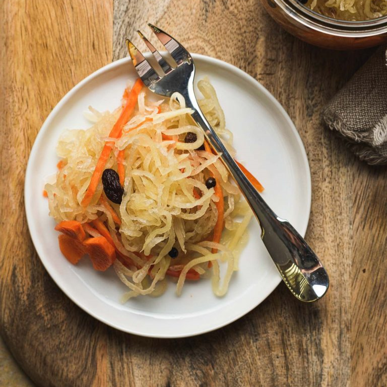
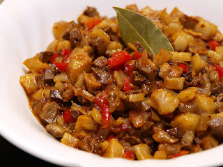
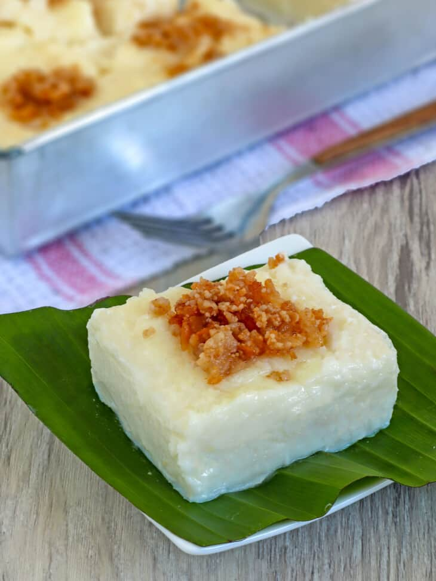

Atchara
Ingredients:
- 1 large unripe green papaya peeled, seeded, and shredded
- salt
- 1 ½ cups white vinegar
- 1 cup sugar
- 1 thumb-size ginger peeled and julienned
- 1 small onion peeled and sliced thinly
- 4 cloves garlic peeled and crushed
- 1 tablespoon peppercorns
- ½ small red bell pepper seeded and julienned
- ½ small green pepper seeded and julienned
- 1 large carrot peeled and shredded
- ¼ cup raisins
Procedure:
- In a bowl, combine shredded papaya and about 2 tablespoons
of salt. Allow to sit for about 1 hour or until papaya begins
to release liquid. Place papaya in a cheesecloth and squeeze firmly to dispel juices.
- In a sauce pot over medium heat, combine vinegar, sugar, and 1
teaspoon of salt. Bring to a simmer and cook, stirring occasionally,
for about 3 to 5 minutes or until sugar and salt are dissolved.
- Add ginger, onions, garlic and peppercorns. Continue to cook for about 2 to 3 minutes.
- In a bowl, combine papaya, bell peppers, carrots and raisins. Add pickling solution and toss gently to combine.
- In a sterilized jar, transfer atchara and close with tight-fitting lid. Refrigerate
for 1 to 2 days to allow flavors to develop before serving.

|
Bopis
Ingredients:
- 2 pounds minced pork lungs
- ½ cup vinegar
- 1 teaspoon salt
- 2 tablespoons canola oil
- 1 onion, peeled and chopped
- 4 cloves garlic, peeled and minced
- 1 tablespoon fish sauce
- 1 large carrot, peeled and diced
- ½ green bell pepper, seeded and chopped
- ½ red bell pepper, seeded and chopped
- 4 Thai chili peppers, stemmed and chopped
Procedure:
- In a bowl, combine minced pork lung (or bopis mix), vinegar, and salt. Marinate for about 10 minutes.
- In a wide skillet over medium heat, heat oil. Add onions and garlic and cook until softened.
- Add minced pork lungs and bring to a boil. Cook, stirring occasionally, for about 20 to 30 minutes or
until liquid is mostly absorbed and meat begins to sizzle.
- Add carrots, bell peppers, and chili peppers. Continue to cook for about 2 to 3 minutes or until vegetables are tender-crisp.

|
Tibok-Tibok
Ingredients:
- 1 cup coconut cream
- 4 cups fresh carabao's milk (or cow's milk)
- 1 cup rice flour
- 1 cup sugar
- ½ teaspoon salt (if using cow's milk)
Procedure:
- In a pan over medium heat, add coconut cream and bring to a boil. Continue to cook, stirring occasionally, until liquid starts to thicken.
- Lower heat and simmer. As oil starts to separate and solids begin to form, regularly stir and scrape sides and bottom of the pan to prevent
from burning. Continue to cook and stir until curds turn golden brown.
- Using a fine mesh sieve or colander, drain latik. Reserve oil.
- Generously brush bottom and sides of 7 x 5-inch pan with coconut oil and set aside.
- In a heavy-bottomed pot, combine milk, rice flour, and sugar. Add salt if using cow's milk. Whisk together until smooth and well-blended.
- Over medium-low heat, bring to a simmer, whisking regularly. Continue to cook, whisking regularly, for about 10 to 15 minutes or until mixture
thickens to a smooth thick paste.
- Gently transfer milk mixture to prepared pan. Smooth and evenly distribute using a spatula.
- Allow to slightly cool and set. Generously brush with coconut oil and garnish with latik. Cut into serving slices.

|